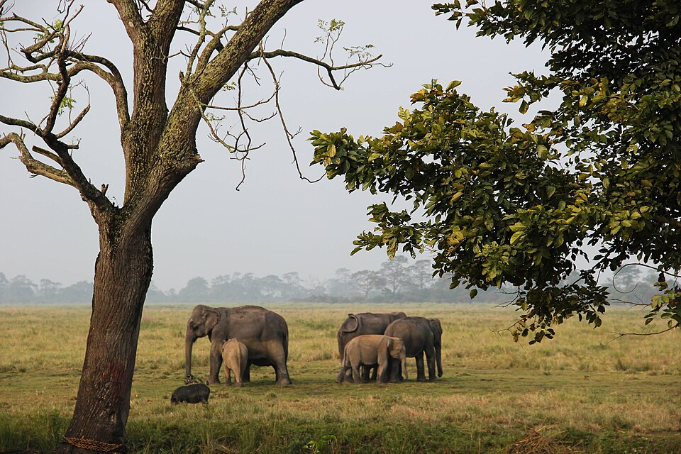

DNA-based SECR data reveals the decline of the tusked massive grey giants, human-elephant conflict at the centre
Kaziranga animal corridor gazette notification has been conveniently removed from the Assam government’s official website. A data set released in 2025 reveals the decline of the population and why it is necessary to make conscious efforts to protect the wildlife and raise questions when their routes are threatened.

Source: Wikimedia Commons
Human-elephant conflicts continue to claim lives. On Tuesday morning, two people were killed in Dhekiajuli, Assam. In the past sixteen days in Assam, the human-elephant conflict has killed five people. This distress has emerged over a period of years due to land encroachment, poaching, and habitat loss. The Kaziranga National Park proposal for a reduced wildlife corridor is another haunting reminder of the conflict disturbing the predetermined paths marked by the elephants.
Urbanization has ruined their sheltered homes, agrees Wildlife biologist Kayden Anthony. “Elephants are likely to travel more frequently at night to avoid people and traffic. Use narrower, less predictable routes. Split herds when roads, fencing, or buildings interrupt movement. Increase crop-raiding because cultivated fields become the easiest remaining food source. Become more defensive when calves are present. Suffer higher calf mortality if family groups are forced into roads or canals. Experience chronic stress from traffic, construction, and repeated displacement.”
The wild elephant population has declined is an understatement, given the distress caused to the wildlife.
DNA-based elephant census reveals that the wild elephant population has declined by 25% in the past eight years. The census reveals that threats to the elephant population have been a result of habitat loss, fragmentation, and human-elephant conflict. The SAIEE 2021-2025 revealed an estimate of 22,446 elephants compared to 29,964 elephants in 2017.
The study revealed a shift from visual and dung-based counts to a DNA mark-recapture technique. This technique ensures a scientifically accurate estimation of the elephant population. The DNA-based method uses unique genetic markers, ensuring that the elephants are identified individually.
Trail length of different states reveals habitat fragmentation
The study was conducted across 188,030 trails covering 6.66km. The data embedded below reveals the Trail length of different states, from highest to lowest, in kilometres in India. Central India & Eastern Ghats have the highest trail length at 366,861 km. Madhya Pradesh follows with 139,651 km. Maharashtra has 78,016 km, while the Western Ghats have 63,805 km. Odisha and Chhattisgarh have 52,633 km and 46,176 km, respectively. Mizoram has the lowest trail length at 546 km. Overall, the trail length varies greatly across different regions and states in India.
Karnataka, Assam, Tamil Nadu, and Kerala have the highest number of elephant populations
The graphic has three scatter plots showing where Deepti Sharma stands compared to other bowlers in Tests, ODIs and T20Is. All players are shown using yellow dots while Deepti Sharma is shown using a red dot.
Region-wise discrepancies reveal population decline
In the Western Ghats, the Elephant population by the new DNA-based SECR was 11,934, which reduced from 14,578 in 2017. In the Northeastern hills and Brahmaputra plains, the elephant population was 6, 559 which went down from 10,139. In the Central Indian Highlands & Eastern Ghats, the elephant population was 1,891 in 2025 and reduced to 3,128 in 2017. The population remained unchanged in the Shivalik and Gangetic plains.
The total elephant population has changed significantly from 1978 to 2007. Over the three decades, with 1978 as the baseline population through 2007, the population of elephants witnessed a 42% increase. The Northeast saw a population peak in 1993 at 10,723 to 11,027. In 1997, it declined, reflecting a poaching crisis and habitat fragmentation and human-elephant conflict. The Shivalik and Gangetic plains reflected the fastest relative growth. This suggested improved counting methods. The Central Highlands and Western Ghats revealed steady growth from 23,10 to 2,633. In Andaman, the population is small and does not affect the national total.
Humans and elephants can co-exist
Megha, a journalist from Assam who has worked on a documentary, ‘5-star hotel on Adivasi land ’, says, “What struck me was how deeply the lives of these communities are connected to the landscape around Kaziranga. Many of the people I spoke to are current or former tea garden workers, and they say their families have been cultivating land here for generations, in some cases going back to the British period. Historically, many Adivasi communities were brought to Assam by the British to work in the tea gardens, and some families were given or settled on land around the gardens to grow food. While reporting, I also heard about how these agricultural fields become spaces where animals move and feed, especially during floods, when animals move towards higher areas like the Karbi Anglong hills. People told me that sometimes animals eat a part of their crop, sometimes a large part, and sometimes almost the entire crop. But for many of them, this has become a part of life in Kaziranga. They have grown up with these interactions and, to an extent, accepted the crop loss that comes with living in this landscape.”
National Elephant Appreciation Day was on 22nd September; the data is an oxymoron poetry, a nail in the coffin of the human and elephant conflict. Humans and elephants can co-exist in the same space; it requires empathy to understand the data, which reveals an alarming truth, and to work collectively towards their protection.